The slide of the lecture is on the left, the same figure on the right, computed in the browser from the same data. The ▶ button moves the parameter step by step.
The Limit Order Book · The Bid-Ask Spread · Illiquidity and Intraday Patterns · Information and Prices · Price Impact and Optimal Execution · High-Frequency Trading and Market Stress · Case Studies: the HFT Arms Race and Intraday Momentum · Artificial Intelligence for Scientific Discovery
The Limit Order Book
A Simulated Order Book
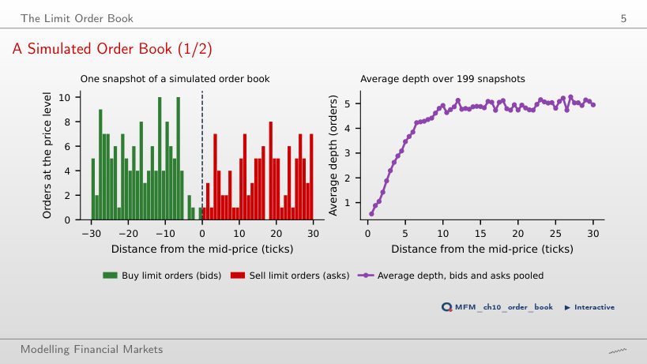
Answer
Depth is a stock of resting orders; arrivals are a flow. Executions and cancellations determine how long orders remain in the book, and market orders consume the best quotes first. In the simulation, the average depth is 0.8 orders at 1 tick from the mid, 4.8 at 10 ticks and 5.0 at 25 ticks; the spread averages 3.23 ticks.
The Price Impact of a Market Order
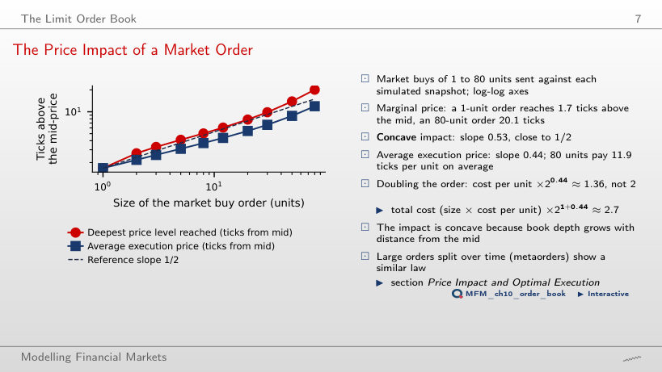
Answer
About 2.71. Total cost is quantity times average cost per unit: 21+0.44 ≈ 2.71. The factor 1.36 = 20.44 applies only to the cost per unit; the factor 2 assumes that it stays constant. The slope 0.44 is fitted over the 10 sizes (the 80-unit order pays 11.9 ticks per unit on average), so the relation is an approximation, not an identity for every pair of orders. The deepest level reached has slope 0.53, close to 1/2: the impact is concave.
The Bid-Ask Spread
The Bid-Ask Bounce (Simulated)
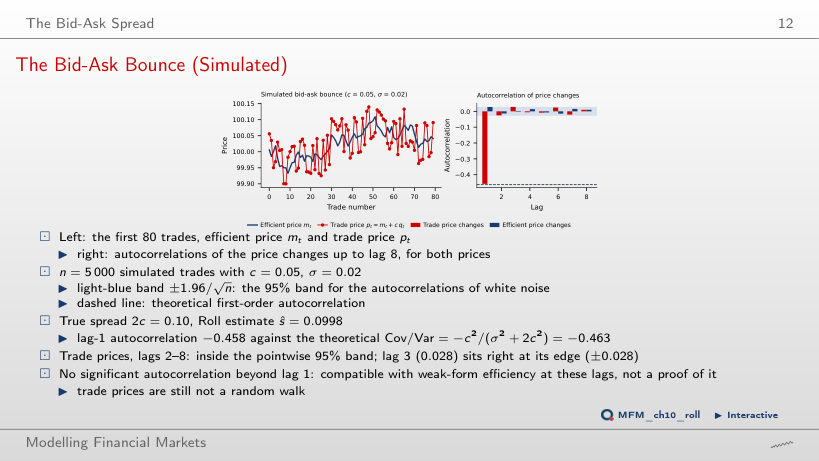
Answer
About −0.490: ρ1 = −c²/(σ² + 2c²) = −0.01/0.0204. The autocorrelation does not double, because c also enters the denominator. At c = 0.05 the estimate is −0.458, against −0.463 theoretically, and the Roll estimator gives ŝ = 0.0998, against the true spread 2c = 0.10. Beyond lag 1 the autocorrelations are small, but the one at lag 3 (0.0278) lies very slightly outside the 95% band (0.0277): the band is pointwise and does not cover all lags simultaneously.
Spread Estimators at Two Frequencies: SPY
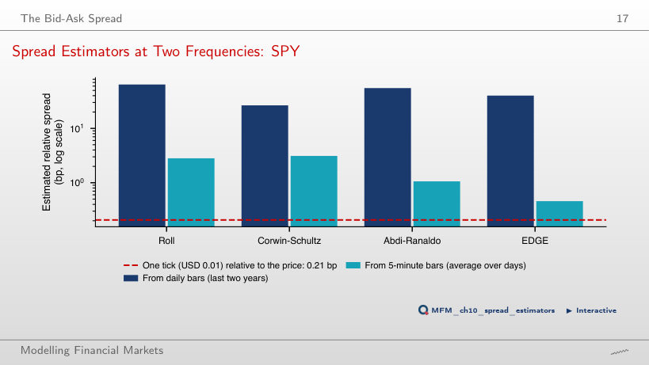
Answer
No. The interval, from a 20-day block bootstrap, concerns the mean of the EDGE estimates after negative estimates are replaced by zero; it does not automatically cover the true effective spread. One tick is a lower bound for the quoted spread, not for the effective spread; proximity to one tick is only a plausibility check. On daily bars all estimates are two orders of magnitude above one tick (Roll 64.3, Corwin–Schultz 26.5, Abdi–Ranaldo 55.1 and EDGE 40.1 bp), because the daily range is dominated by volatility.
Spread Estimates Across 25 Assets
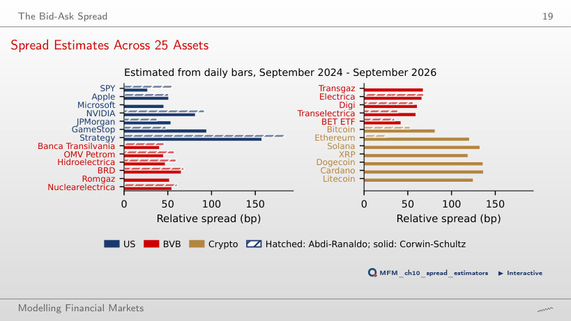
Answer
Similar proxy values do not establish similar effective spreads. Estimates from daily bars rank the assets by volatility (the Spearman correlation with annualised volatility is 0.94), which describes the ranking without validating the level of trading costs; that requires an independent benchmark from trades and quotes. The median daily traded value, USD 10,505 million in the US and USD 0.34 million on the BVB (a ratio of about 31,000), warrants caution.
Illiquidity and Intraday Patterns
Amihud Illiquidity Across 25 Assets
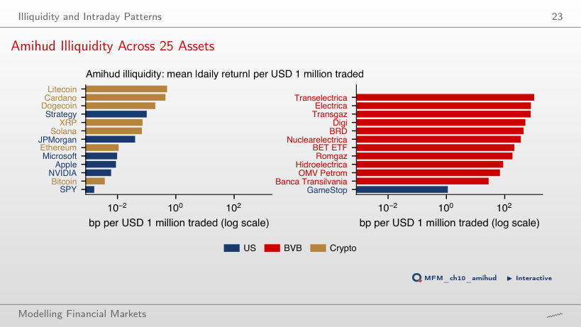
Answer
About 17,600 times: 28.0 bp against 0.0016 bp per USD 1 million traded. Bitcoin has 0.0037 bp, close to SPY, and Transelectrica 1,024.0 bp. The Amihud ratio separates the three markets by orders of magnitude, which the spread estimators from daily bars do not.
Illiquidity over Time: Three Markets
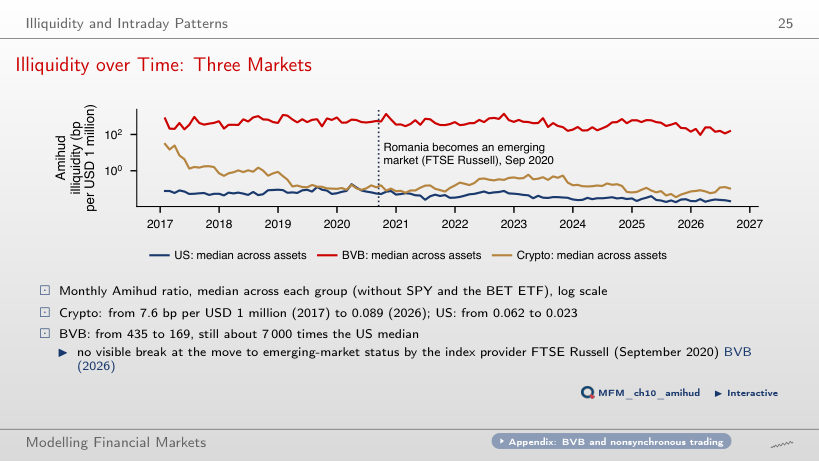
Answer
No: the observed path alone provides no counterfactual, and the absence of a visible break does not establish a zero effect either. The mean of the monthly BVB medians falls from 435 bp per USD 1 million in 2017 to 169 bp in January–August 2026; in August 2026 the monthly median is 153 bp, about 7,000 times the US median. The largest decline is in crypto: the annual mean falls from 7.6 bp to 0.089 bp.
SPY Within the Trading Day
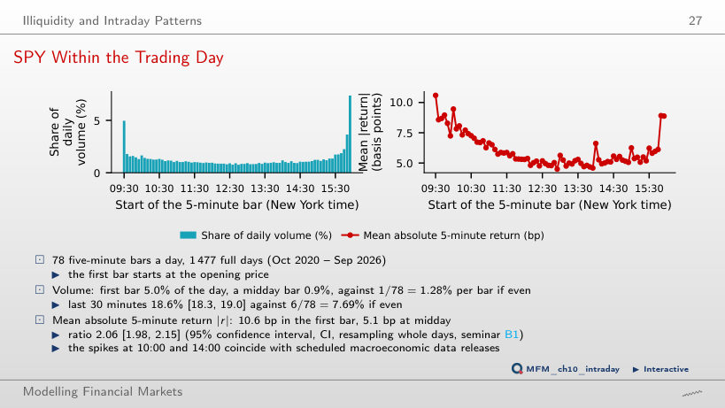
Answer
18.6%, against 12.7% in the first 30 minutes and 0.9% for one 5-minute bar at midday. The mean absolute return is 10.6 bp in the first bar and 5.1 bp at midday, a ratio of 2.06.
Liquidity and Volatility: SPY and the VIX
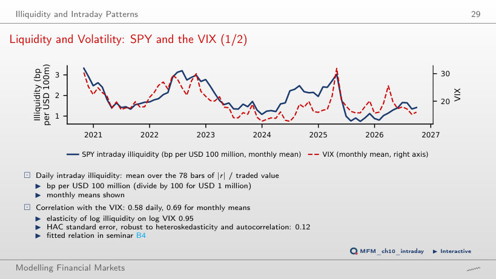
Answer
A rise of about 9.5%: the elasticity of illiquidity with respect to the VIX is 0.95, and 0.95 × 10% = 9.5%. This is an association, not an identified causal effect. The daily slope has HAC standard error 0.12; on monthly means the slope is 1.03. The correlation is 0.58 on daily data and 0.69 on monthly means. In April 2025 illiquidity was 3.04 bp per USD 100 million, against a mean of 1.83.
Information and Prices
Kyle's Lambda and the Insider's Profit
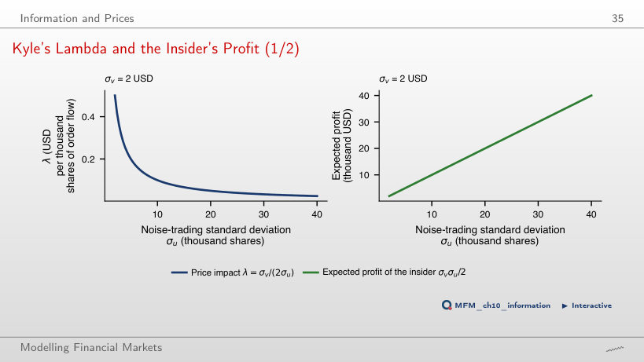
Answer
It stays the same. Expected profit is σvσu/2, so the two changes offset each other: from σv = USD 2 and σu = 10 thousand shares to USD 1 and 20 thousand shares, the profit stays at USD 10 thousand. λ = σv/(2σu), by contrast, falls fourfold, from 0.10 to 0.025 USD per thousand shares. The price still reveals half of the private information.
Price Impact and Optimal Execution
Optimal Trajectories and the Efficient Frontier
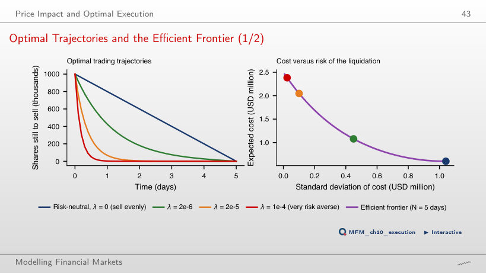
Answer
Divide λ by 4. The trajectory depends on the product λσ², and doubling σ multiplies σ² by 4; this also holds for the discrete formula, in five daily steps, used by the page. Selling 1 million shares over 5 days with λ = 2·10⁻⁶, the standard deviation of the cost falls from USD 1.04 million (selling evenly) to USD 0.45 million, and the expected cost rises from 0.60 to 1.08 million USD; 57% of the position is sold on the first day.
High-Frequency Trading and Market Stress
The Flash Crash of 6 May 2010
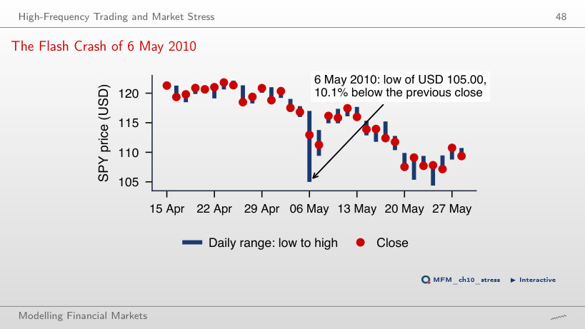
Answer
About 7.56%: 112.942/105 − 1. The low was 10.1% below the previous close (USD 116.82), and the close 3.3% below it. Volume was 3.0 times the median of the preceding days. Daily bars support these comparisons without describing the fall and the recovery within the day.
Case Studies: the HFT Arms Race and Intraday Momentum
Case Study: the Implied Daily Tax on SPY
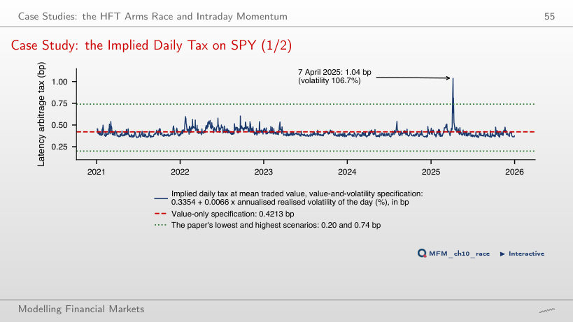
Answer
It stays the same. The implied tax is 0.3354 + 0.0066 × realised volatility, in percent; the threshold changes only the classification of exceedances: from 30% of the days above 0.4213 bp to 2 of the 1,244 days above 0.74 bp. The maximum, 1.04 bp, is on 7 April 2025, with a realised volatility of 106.7%; the median is 0.40 bp. The values transfer to SPY the coefficients estimated in London, where the measured tax is 0.419 bp.
Case Study: SPY Intraday Momentum, 2020–2026
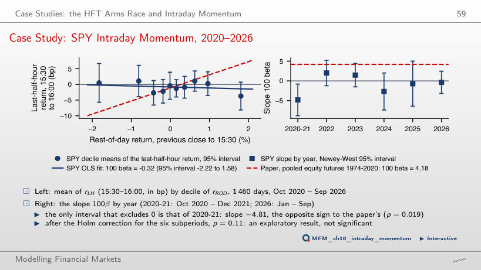
Answer
It rejects none of the null hypotheses in this family: the first comparison is 0.043 against 0.05/6 ≈ 0.0083, and the smallest adjusted p-value is about 0.26. Non-rejection does not establish zero slopes. For the last 30 minutes, over the 1,460 days of Oct 2020 – Sep 2026, the slope is 100β = −0.32 (t = −0.33), with the 95% interval [−2.22, 1.58]: the paper's slope, 4.18, lies outside it. The only subperiod whose interval excludes 0 is 2020-21, with slope −4.81, of the opposite sign (p = 0.019; after the Holm correction for six subperiods, p = 0.11).
Artificial Intelligence for Scientific Discovery
Mini-Case: Cost or Volatility?
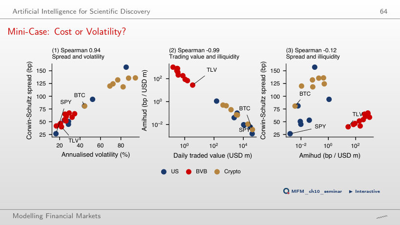
Answer
The test does not identify a nonzero monotonic association; it establishes neither independence nor causality. The Amihud ratio is an illiquidity proxy, not the observed effective trading cost. In the same sample, the correlation of Corwin–Schultz with annualised volatility is 0.94; the difference between the two correlations is 1.06, with the 95% interval [0.58, 1.44] over assets. The Amihud ratio and traded value have a correlation of −0.99.
SPY: 5-minute bars of the regular session, October 2020 – September 2026, and daily bars. The 25 US, BVB and crypto assets: daily bars, September 2024 – September 2026; BVB traded values are converted to USD. EODHD prices; VIX. The order book and the Roll model are simulated.